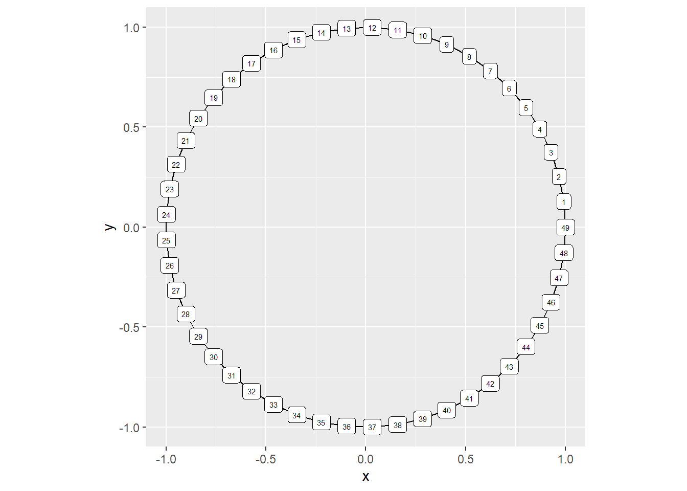
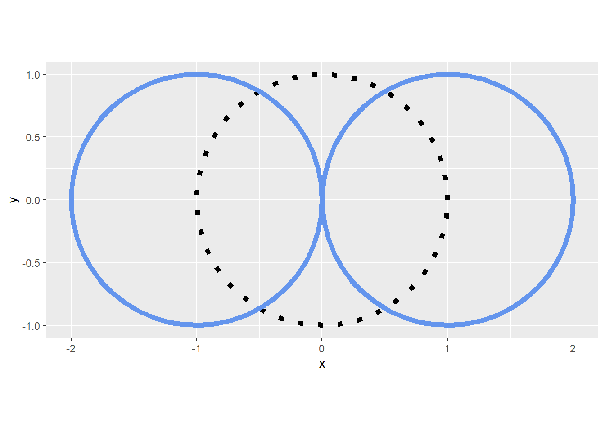
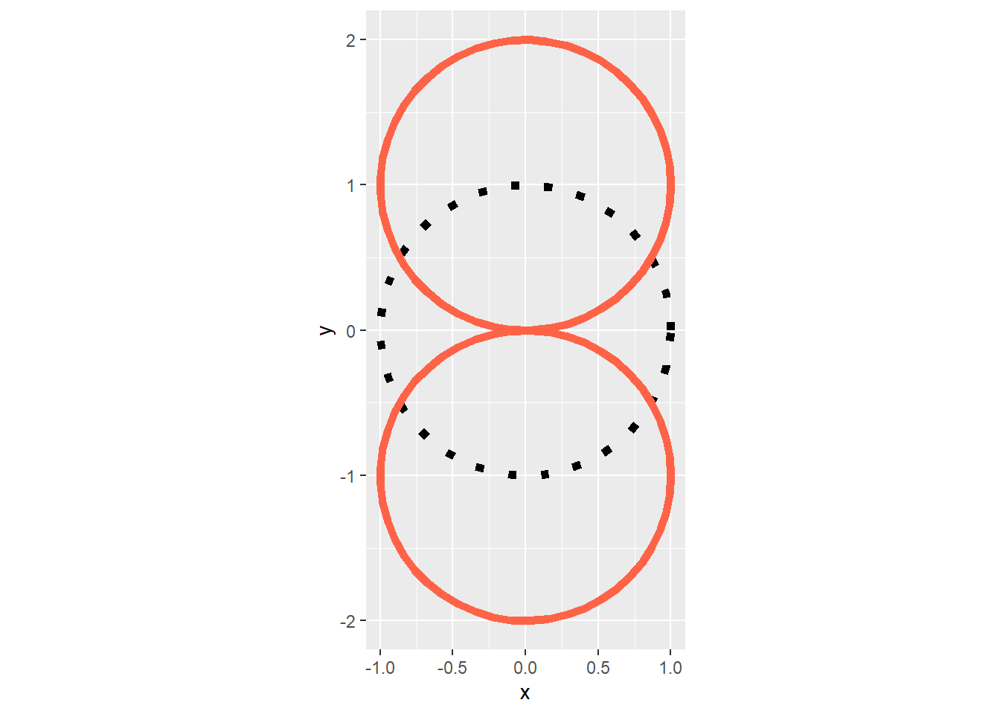
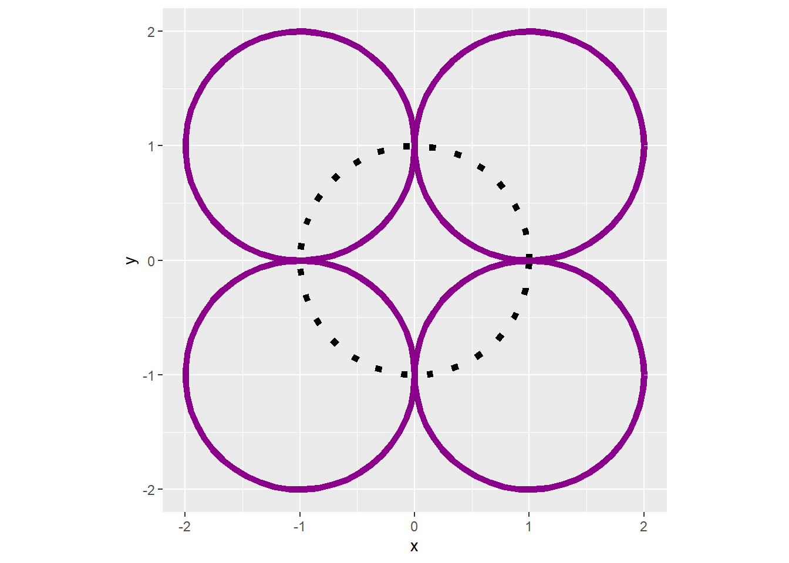
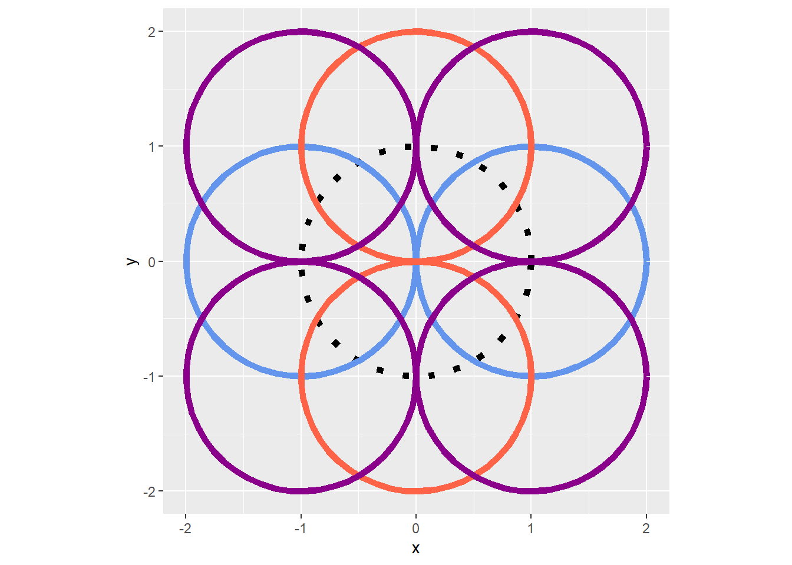
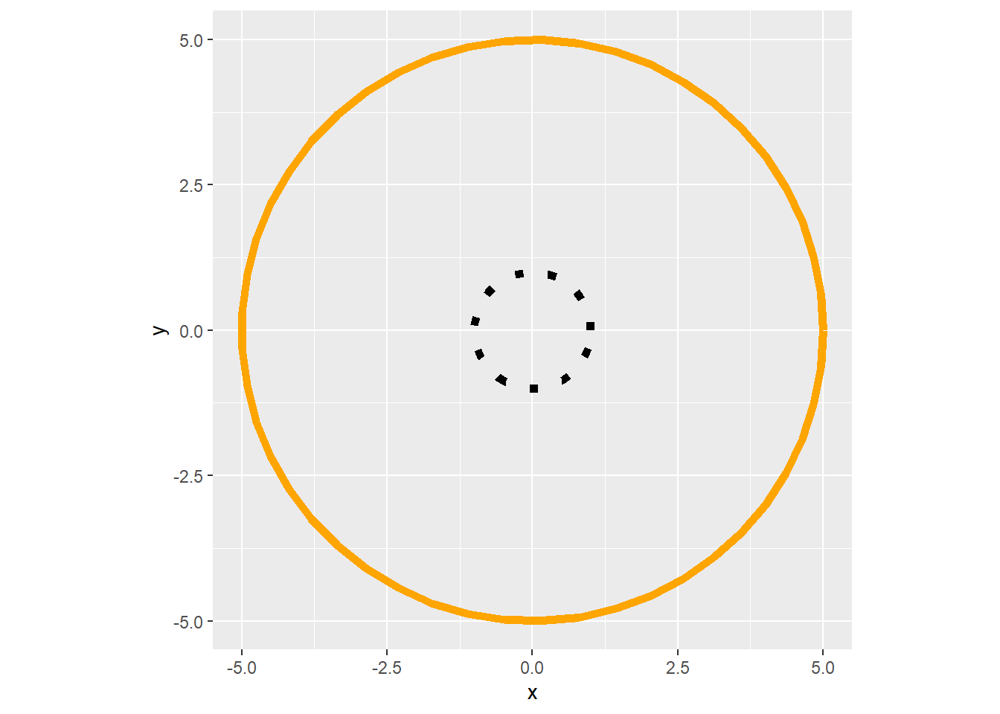
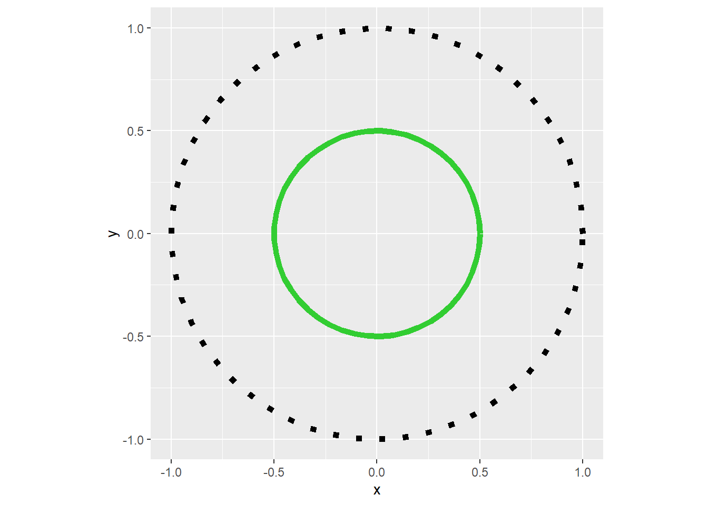
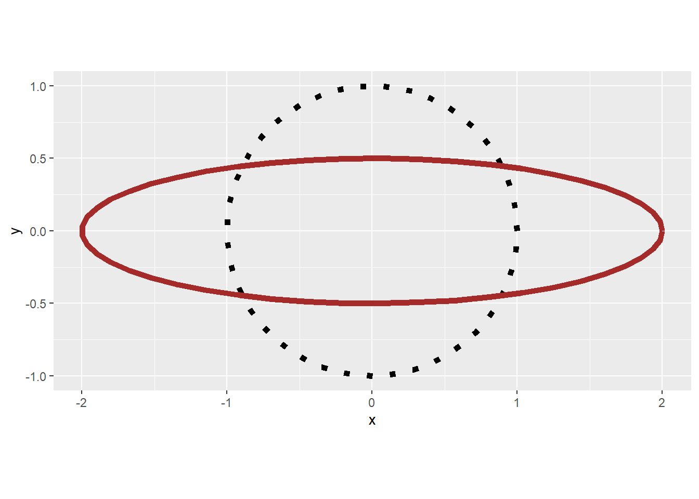

I want to make shapes manually. So here’s where I’ll drop processes for that as I learn. This is currently a low–effort work in progress. The hardest part so far has been converting nonparametric equations into parametric equations that will display the shapes as expected on a Cartesian coordinate system.
Circles
Converting from Non-Parametric to Parametric For a Unit Circle
In order to create the coordinates for a circle, we have to create a system that will generate x and y points that will visually represent a circle when plotted on ggplot2’s carteisan plane.
Creating the Data
Decide how many angles/points/slices of the circle you wish to calculate. = angle_n.
Create a sequence of angles (thetas aka \(\theta\)) based on the amount of angles/points/slices. = theta.
Create a system of coordinates (aka data frame) of calculated x and y points using the theta. = circle_df
Plot the dataframe with appropriate aesthetics and geoms desired.
Use coord_equal() for better scaled drawing of circles. (otherwise, it may look like an ellipse)
Recall that an angle consists of 360 \(\degree\) which in radians (\(rad\)) equates to \(2pi\).
library(ggplot2) #For plottinglibrary(tibble) #For cleaner df manipulation (base can be used)#Step 1====#Setting 360 points (angles) that lie in a circle#angle_n <-50#Step 2====#Calculating angle_n angles/points within a circle#theta <-seq(from =0,to =2* pi, length = angle_n)#Step 3====#Creating a dataframe or corresponding x and y values for the circle using thetacircle_df <-tibble(x =cos(theta),y =sin(theta),label =0:(angle_n-1))#Step 4 and 5====#Plotting the circlecircle_df |>ggplot(aes(x,y, label = label)) +geom_path() +geom_label(size =2) +#labels added for learning/comparative purposescoord_equal()

Performing Transformations on a Circle
Movement of a circle
Moving a circle on a plane requires simply adding or subtracting values from the x and y points of the existing system accordingly.
Horizontal movement requires a value added or subtracted to/from the x variable in the system.
library(purrr) #For list manipulationlibrary(dplyr) #for data wrangling#Moving the unit circle horizontally by 1 left (subtract) and right (addition)trans_values <-c(-1,1)trans_directions <-c("left", "right")horizontal_trans <-map2_df(trans_values, trans_directions, ~circle_df |>mutate(x = x + .x,direction = .y) )horizontal_trans |>ggplot(aes(x,y, group = direction)) +geom_path(data = circle_df, aes(x,y), linetype =3,linewidth =2,inherit.aes =FALSE) +geom_path(color ="cornflowerblue",linewidth =2) +coord_equal()

Vertical movement requires a value added or subtracted to/from the y variable in the system.
#Moving the unit circle vertically by 1 down (subtract) and up (addition)trans_values <-c(-1,1)trans_directions <-c("down", "up")vertical_trans <-map2_df(trans_values, trans_directions, ~circle_df |>mutate(y = y + .x,direction = .y) )vertical_trans |>ggplot(aes(x,y, group = direction)) +geom_path(data = circle_df, aes(x,y), linetype =3,linewidth =2,inherit.aes =FALSE) +geom_path(color ="tomato",linewidth =2) +coord_equal()

Diagonal movement requires a value added or subtracted to/from both the x and y variables in the system.
#Moving the unit circle diagonally by 1 in all four main quadrants.trans_xvalues <-c(-1,1,-1,1)trans_yvalues <-c(-1,1,1,-1)trans_directions <-c("down-left", "up-right", "up-left", "down-right")circle_options <-list(trans_xvalues, trans_yvalues, trans_directions)diagonal_trans <-pmap_df(circle_options, ~circle_df |>mutate(x = x + ..1,y = y + ..2,direction = ..3))diagonal_trans |>ggplot(aes(x,y, group = direction)) +geom_path(data = circle_df, aes(x,y), linetype =3,linewidth =2,inherit.aes =FALSE) +geom_path(color ="darkmagenta",linewidth =2) +coord_equal()

Visual Summary
Horizontal (x variable operations)
Vertical (y variable operations)
Diagonal (x and y variable operations)

Resizing/Scaling a Circle
Scaling/resizing a circle on a plane requires multiplying or dividing values from the x and y points of the existing system accordingly.
Multiplying both the x and y variables will increase the scale of the circle (size it up/make it larger by the value)
#Increasing the size of the circle by 5 units on both the x and y axis - multiplying.trans_value <-5multi_trans <-map_df(trans_value, ~circle_df |>mutate(x = x * .x,y = y * .x))multi_trans |>ggplot(aes(x,y)) +geom_path(data = circle_df, aes(x,y), linetype =3,linewidth =2,inherit.aes =FALSE) +geom_path(color ="orange",linewidth =2) +coord_equal()

Dividing both the x and y variables will decrease the scale of the circle (size it down/make it smaller by the inverse of the value)
#Decreasing the size of the circle by 1/2 units on both the x and y axis - dividing.trans_value <-2div_trans <-map_df(trans_value, ~circle_df |>mutate(x = x / .x,y = y / .x))div_trans |>ggplot(aes(x,y)) +geom_path(data = circle_df, aes(x,y), linetype =3,linewidth =2,inherit.aes =FALSE) +geom_path(color ="limegreen",linewidth =2) +coord_equal()

Dividing and Multiplying the x and y variables will increase and decrease the scale of the circle based on which variable receives which operation. In the following example, the x variable is multiplied so increases by 2 along the x axis. The y variable is divided by 2 so is decreased by that inverse (1/2). This will result in an ellipse most of the time.
#Decreasing the size of the circle by 1/2 units on both the x and y axis - dividing.trans_value <-2combo_trans1 <-map_df(trans_value, ~circle_df |>mutate(x = x * .x,y = y / .x))combo_trans1 |>ggplot(aes(x,y)) +geom_path(data = circle_df, aes(x,y), linetype =3,linewidth =2,inherit.aes =FALSE) +geom_path(color ="brown",linewidth =2) +coord_equal()

Dividing and Multiplying with different values for the x and y variables will increase and decrease the scale of the circle based on which variable receives which operation. In the following example, the x variable is multiplied so increases by 2 along the x axis. The y variable is divided by 6 so is decreased by that inverse (1/6 ≈ .1666). This will result in an ellipse most of the time.
#Decreasing the size of the circle by 1/2 units on both the x and y axis - dividing.trans_valuex <-2trans_valuey <-6combo_trans2 <-map2_df(trans_valuex, trans_valuey, ~circle_df |>mutate(x = x * .x,y = y / .y))combo_trans2 |>ggplot(aes(x,y)) +geom_path(data = circle_df, aes(x,y), linetype =3,linewidth =2,inherit.aes =FALSE) +geom_path(color ="magenta",linewidth =2) +coord_equal()